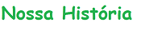
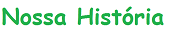

Nossa equipe
A equipe da BRISK IDIOMAS é formada por um grupo de professores com um denominador comum: a paixão pelas línguas. Nosso grande desafio como professores é poder oferecer aos alunos, através de nossas aulas presenciais e on-line, as ferramentas necessárias para que todos possam aprender inglês e espanhol da maneira mais segura e confortável. Capacitar pessoas autônomas, curiosas, críticas e respeitadoras são objetivos sobre os quais sempre trabalhamos em nossas aulas. Os idiomas sempre foram nossa paixão. Fazem parte de nossa identidade, já que fazem parte de nossas memórias de infância. Agora como adultos, idiomas, como o espanhol e/ou inglês, são o que nos permite nos desenvolver profissional e pessoamente .
Nossa filosofia
A BRISK IDIOMAS é o lugar onde aprender uma língua significa mais do que estudar um idioma, implica o conhecimento de uma cultura e a abertura de nosso entorno a diferentes realidades, em um mundo em que a compreensão e respeito á diversidade se faz cada vez mais essencial.
Todos nós da equipe da BRISK IDIOMAS estamos convictos de que os idiomas são entidades vivas, que devem ser aprendidos de maneira contextualizada, em sua contemporaneidade, por isso não medimos esforços para que nossas aulas e nossa metodologia reflitam o pulsar de um coração comprometido com a descoberta de uma nova linguagem, de uma nova realidade.
Nossa escola
A BRISK IDIOMAS foi fundada em 2001, em um espaço localizado no centro de São João da Boa Vista – SP; desde então, temos crescido graças à confiança que todos os nossos alunos depositam em nós ano após ano conquistada pelo esforço de toda uma equipe comprometida com a excelência no ensino. Atualmente, oferecemos diversas modalidades de cursos presenciais e on-line, que facilitam a logística de nossos alunos proporcionando uma maior oferta e disponibilidade de horários, cursos e grupos.